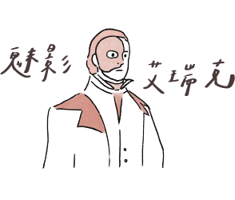

給才華洋溢的你
角色特質：
具有神秘感，浪漫且才華出眾，堅強的外表，內心卻有些許脆弱寂寞不為人所知。
人物故事：
故事發生在1919年巴黎歌劇院。
魅影艾瑞克是一個充滿音樂天賦以及擁有腹語術的魔術師，才華洋溢，
神秘的他卻極為浪漫，滿心為自己所愛的人付出一切，
只為一個小小的心願─住在充滿陽光的公寓、一個真心愛他的妻子，
一個屬於正常人的生活。
他出生於法國魯昂，生來其貌不揚，只能以面具掩面。
父母不喜歡他，因此他逃離了家，遊歷世界，他才華橫溢，擅長作曲和建造各種機關暗器。
回到法國之後，暗中參與巴黎歌劇院的建設，
在歌劇院的牆壁裡和地下室布滿機關和密室。待完工後，自己便藏身其中。
多年來他神出鬼沒，躲避世人驚懼鄙夷的目光，被眾人稱之為「魅影」。
雖然面容恐怖，卻有一副好嗓子，是個才華洋溢的天才。
人人畏懼於他的臉孔，殊不知最可怕的外表下卻藏著一顆最脆弱的心。
（出自歌劇魅影）